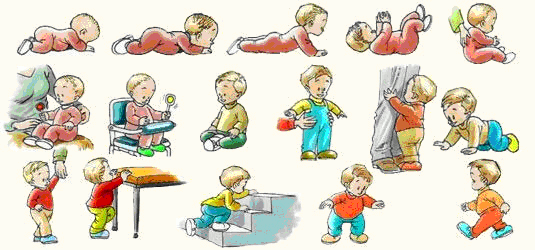

Otro de los aspectos muy importantes a tener en cuenta en esta etapa es el sistema neuromuscular:
-
Aparato neuromuscular. La posición de descanso del recién nacido es la de tumbado o decúbito supino,Decúbito supinoAcción de estar tumbado boca arriba y apoyado sobre la espalda lateral o ventral. A partir de los 14 meses extiende las extremidades para descansar. Analizaremos tres aspectos importantes del niño o niña: la postura tumbado y sentado, los movimientos corporales y la prensión de las manos.
-
La postura: La postura del recién nacido es la de tumbado o decúbitoDecúbitoAcción de acostarse o posición adoptada al acostarse. (lateral, supino o dorsal y ventral), prácticamente durante todo el día. Mientras duerme, generalmente adopta la postura de decúbito lateral, flexionando los brazos y piernas contra su cuerpo. A partir de los 14 meses extiende las extremidades para descansar. Cuando el niño está despierto adopta la postura de supino o dorsal (boca arriba). Comenzará, a mantenerse sentado a partir de los seis meses en algunos intervalos de tiempo, y a los ocho meses lo hará definitivamente. A los ocho meses puede estar de pie pero con ayuda de las manos de un adulto. A la edad de un año, podrá sujetarse solo de pie y aumentar su base de sustentación y equilibrio mediante una discreta flexión de las rodillas, separando y arqueando las piernas y marcando mucho la curvatura dorsal. A los dos años ya controlará bien esta posición. Durante los 3 primeros meses no se debe poner al niño o la niña en la posición de sentado por la debilidad de su columna y por la forma redondeada que tiene por la posición fetal intrauterina.
-
Los movimientos corporales: Hasta los 8-10 meses el niño o niña no puede hacer ningún desplazamiento, excepto algo en sentido lateral, pues sólo realiza ejercicios de flexión y extensión de sus extremidades. A partir de esa edad ya comienza a hacer movimientos de arrastre y gateo, avanzando por movimientos alternantes y cruzados de sus cuatro extremidades. Cuando cumple el año, incluso un poco antes, se pueden poner de pie y andar, siempre apoyándose en al pared o en algún mueble. A partir de esta edad, generalmente, empiezan a andar sin ningún apoyo externo. A los 18-24 meses los niños caminan con más soltura, controlan más el equilibrio y aunque siguen cayéndose, se levantan rápidamente y continúan la marcha. Paulatinamente, dentro de este proceso, van realizando actos más complejos, como bajar y subir escaleras con ayuda y será ya a los tres años cuando alcancen la destreza de correr y saltar, así como la de subir y bajar escalones.
-
Los movimientos de prensión de las manos: Cuando estimulamos la palma de la mano de un niño recién nacido, éste la contrae brevemente flexionando los dedos excepto el pulgar. Ya a los tres meses tiene una coordinación visomotora más desarrollada, por lo cual, el niño o la niña, al ver los objetos, mueve las manos para intentar cogerlos y puede llegar a coger torpemente uno cuando se le da, aunque se le cae rápidamente. A la edad de siete u ocho meses empieza a usar el dedo pulgar, así puede intercambiar objetos de una mano a la otra. Empieza a mejorar el uso de la pinza del pulgar oponiéndolo al índice fácilmente a partir de los nueve meses con lo que podrá coger objetos con mayor precisión. Se puede decir que la lateralidad comienza a definirse a partir de los seis meses, ya que el niño o la niña empieza a usar una mano más que la otra. Este proceso finalizará alrededor de los cuatro años.
|
Desarrollo motor según edades
Pasa el ratón por cada cada etapa para leer sus características
|
| 1 MES: Levanta la barbilla |
| 2 MESES: Levanta el tórax |
| 3 MESES: Intenta alcanzar objetos |
| 4 MESES: Se sienta con ayuda |
| 5 MESES: Puede agarrar objetos |
| 6 MESES: Toma objetos oscilantes |
| 8 MESES: De pie con ayuda |
| 9 MESES: Se mantiene apoyado |
| 12 MESES: Se mantiene en pie agarrado |
| 13 MESES: Trepa por la escalera |
| 14 MESES: Se sostiene de pie solo |
|
|  |
| Isftic. Uso educativo-nc. Procedencia. |